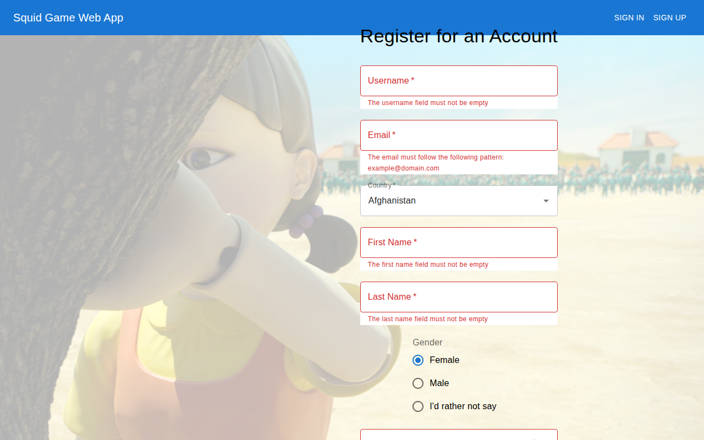
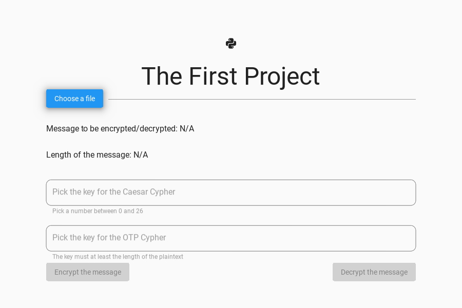

During my bachelor's at the University of Bucharest.

Bachelor's thesis
Students rank their electives by drag and drop; when the session closes, seats are assigned
by grade. Admins import accounts from Excel and manage courses; teachers email their students.
Romanian and English interface.
Django RESTReactTypeScriptReduxChannels

Find Wally in a masked crowd before your three lives run out.
C++OpenGL

Sign up as a player or a guard; JWT access and refresh tokens.
ASP.NET CoreEF CoreReact

Track episodes, see monthly watch time, befriend users and challenge them to binge-watch.
JavaSpring BootVaadin

Caesar + one-time pad double encryption, and a Blum Blum Shub random generator.
PythonKivy

An arcade claw machine from Lego and plexiglass, steered wirelessly over nRF24L01 radios.
ArduinoC++
Flights, airports, airlines, staff and shops, with reports on departures and employees.
JavaSpring BootMySQL